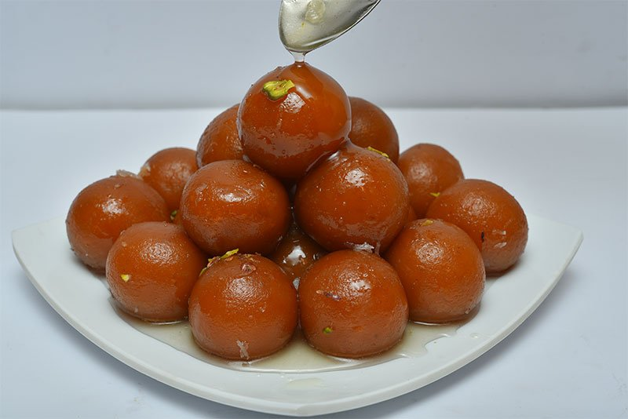

South Indian Recipes
South Indian RecipesBreakfast
Rice items
Sambars and Curry
Sweets
Snacks
 Sweet Jamun, also known as Gulab Jamun, is a popular South Indian dessert with a rich history and a delectable taste that has delighted palates for centuries. Its origins can be traced back to medieval India, where it evolved from a Persian dish called "luqmat al-qadi." Over time, the recipe underwent modifications and adaptations, eventually becoming the beloved Gulab Jamun we know today. The word "Jamun" refers to a dark purple fruit indigenous to the Indian subcontinent, and the sweet gets its name due to its similar appearance and color. The dessert is traditionally made from khoya (reduced milk), which is combined with flour and shaped into small balls. These balls are then deep-fried until they achieve a golden-brown hue, giving them a crisp outer layer. Once fried, the Jamuns are soaked in a sugar syrup infused with cardamom or rose water, imparting a fragrant and flavorful essence. The taste of South Indian sweet Jamun is a harmonious blend of textures and flavors. The outer layer is soft, with a slightly crunchy exterior that gives way to a melt-in-your-mouth consistency. The inner core is dense and sweet, providing a burst of rich, creamy goodness. The sugar syrup adds a delightful sweetness and aromatic undertones, making every bite a sensorial delight. Gulab Jamun has become a staple at celebrations, festivals, and special occasions throughout South India. Its popularity has transcended regional boundaries, making it a cherished dessert across the country and beyond. Whether enjoyed hot or at room temperature, this iconic sweet continues to be a symbol of joy and festivity, embodying the rich culinary heritage of South India.
Sweet Jamun, also known as Gulab Jamun, is a popular South Indian dessert with a rich history and a delectable taste that has delighted palates for centuries. Its origins can be traced back to medieval India, where it evolved from a Persian dish called "luqmat al-qadi." Over time, the recipe underwent modifications and adaptations, eventually becoming the beloved Gulab Jamun we know today. The word "Jamun" refers to a dark purple fruit indigenous to the Indian subcontinent, and the sweet gets its name due to its similar appearance and color. The dessert is traditionally made from khoya (reduced milk), which is combined with flour and shaped into small balls. These balls are then deep-fried until they achieve a golden-brown hue, giving them a crisp outer layer. Once fried, the Jamuns are soaked in a sugar syrup infused with cardamom or rose water, imparting a fragrant and flavorful essence. The taste of South Indian sweet Jamun is a harmonious blend of textures and flavors. The outer layer is soft, with a slightly crunchy exterior that gives way to a melt-in-your-mouth consistency. The inner core is dense and sweet, providing a burst of rich, creamy goodness. The sugar syrup adds a delightful sweetness and aromatic undertones, making every bite a sensorial delight. Gulab Jamun has become a staple at celebrations, festivals, and special occasions throughout South India. Its popularity has transcended regional boundaries, making it a cherished dessert across the country and beyond. Whether enjoyed hot or at room temperature, this iconic sweet continues to be a symbol of joy and festivity, embodying the rich culinary heritage of South India.
